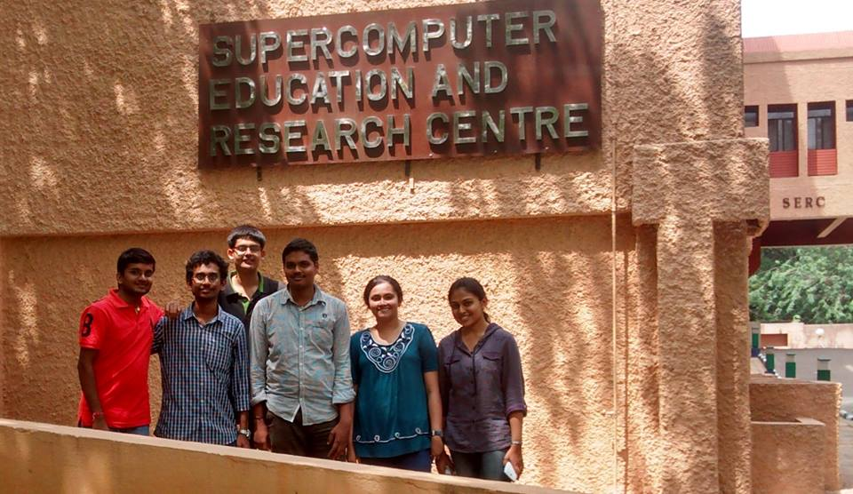

Research Intern at IISc, Bangalore

I got an opportunity to pursue undegraduate research at the Supercomputer Education Research Centre at IISc, Bangalore from May to July, 2014, under the guidance of Prof. N. Balakrishnan. This was sponsored by the Science Academies Summer Research Fellowship".
During this time I was assigned to the Social Network Analysis group. My project was entitled "Twitter User Classification Using Machine Learning". My work involved the application of Machine Learning Techniques for classifying users on their interests in Twitter, using features from their profile. The tweets and profiles were aggregated using the Twitter API on a Hadoop cluster. For analysis, I utilised various programming languages including R, Python and Java and Packages like WEKA, NLTK and scikit. In particular I studied and implemented algorithms like Decision Trees, Naive Bayes and SVMs. Here is a link to a paper authored by me during this time. To know more about my work, you can also check out my final report submitted to the Indian Academy of Sciences, here.
At IISc, I met a set of some of the most intellectual people of the country, I got an opportunity to attend a lecture series on Big Data, and a symposium on the life of Sir C.V. Raman. There were also special lectures on Climate Change and Scientefic Ethics organised by the Indian Academy of Sciences for the Summer Fellows.
During my stay here, the Supercomputer Education Research Centre was also visited by the Hon'ble Governor of the state of Andhra Pradesh and Telangana, Mr. ESL Narsimhan. Check out the picture below of the Social Network Analysis group with the Governor and Prof. N. Balakrishnan.